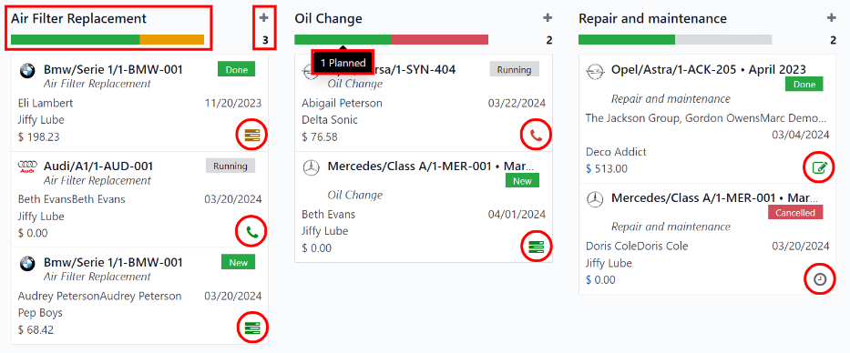
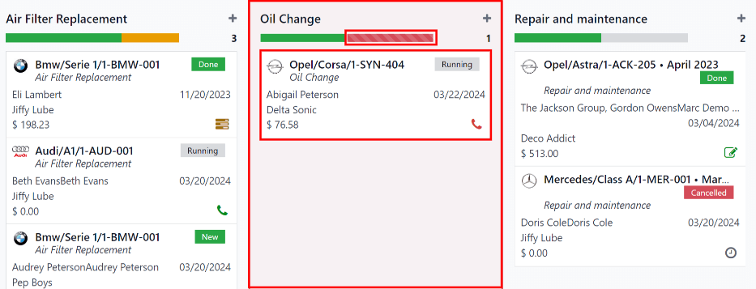

服务¶
为了妥善维护车队，需要进行定期维护和定期维修。有必要为整个车队安排维修和管理服务，以确保所有车辆在需要时都处于良好的工作状态。
创建服务记录¶
要记录车辆的服务，请导航至 ，进入 服务 主仪表板。点击左上角的 新建 按钮，打开新的服务表单。
填写表格中的信息。唯一需要填写的两个字段是 服务类型 和 车辆。
服务表单会在输入数据时自动保存。不过，也可以随时点击 手动保存 选项手动保存表单，该选项由 :guilabel:`（云上传）`图标表示。
表格上的字段是：
描述：输入服务的简短描述。
服务类型：使用下拉菜单选择服务类型。或输入新的服务类型，然后点击 创建“服务类型”`或 :guilabel:`创建并编辑…，以 添加服务类型并进行配置。
重要
服务类型 在 Odoo 中**没有**预配置。首次记录服务时，需要先 创建 才能选择服务*类型*。
日期：使用弹出式日历窗口，选择已提供或计划提供服务的日期。使用 < >（箭头） 图标导航到所需的月份，然后点击日期进行选择。
费用：输入服务费用。
供应商：使用下拉菜单选择提供服务的供应商。如果系统中尚未输入供应商，请键入供应商名称，然后点击 创建 以添加供应商，或点击 创建并编辑…，以 添加和配置供应商。
车辆：从下拉菜单中选择维修过的车辆。选择车辆后，驾驶员 字段将被填充，Odometer Value 字段的度量单位将出现。
驾驶员：当选择:guilabel:`车辆`时，为所选车辆列出的当前驾驶员。如果需要更改驱动程序，可从下拉菜单中选择另一个驱动程序。
Odometer Value: enter the odometer reading when the service was done. The units of measure are either in kilometers (km) or miles (mi), depending on how the selected vehicle was configured.
选择 车辆 时，该字段的度量单位将被填充。这来自车辆表单。
小技巧
要从公里改为英里，或从英里改为公里，请点击 车辆 字段中所选车辆右侧的 内部链接 按钮。
更改度量单位，然后通过面包屑链接返回服务表单。然后在 Odometer Value 字段中更新计量单位。
备注：在服务表格底部输入维修备注。

创建服务类型¶
服务类型必须从服务表单中创建。没有其他方法可以访问服务类型列表。
打开:ref:服务表单 <fleet/service-form>，在相应字段中键入新 服务类型 名称。然后，点击 创建和编辑…，弹出 创建服务类型 表单。
在服务表格中输入的服务类型会自动填充 名称 字段，如果需要，可以修改该字段。
然后，从该字段的下拉菜单中为新服务类型选择 类别。两个默认选项是 合同 或 服务。不能创建其他类别。
如果服务*仅*适用于合同或服务，请选择相应的 类别。如果服务对于合同和服务**均**适用，则此字段留空。
完成后，点击 保存并关闭。
创建供应商¶
首次提供服务时，数据库中通常还没有供应商的信息。最好的做法是在数据库中添加供应商的全部详细信息，以便于检索任何必要信息。
打开:ref:服务表单 <fleet/service-form>，在相应字段中键入新 供应商 名称。然后，点击 创建和编辑…，出现 创建供应商 表单。
默认情况下，在服务表单中输入的供应商名称会填充 名字 字段。如果需要，可以修改该字段。
注解
在 创建供应商 表单上可能会显示不同的选项卡或字段，具体取决于安装了哪些其他应用程序。
一般信息¶
在表格上半部分填写以下信息：
个人 或 公司：点击相应的单选按钮，选择新添加的供应商是个人还是公司。
进行选择时，某些字段可能会从表单中消失。如果下面的任何字段不可见，那是因为选择了 公司 而不是 个人。
名称：在此字段中输入个人或公司的名称。
公司名称：使用下拉菜单，选择供应商所属的公司（如有）。
如果选择了表格顶部的 公司 单选按钮，则不会显示此字段。
合同：在此部分输入联系信息。
如果需要，可将 联系人 字段更改为不同类型的联系人。点击 联系人 将显示一个下拉菜单。可用选项包括 联系人、发票地址、送货地址、跟进地址`或 :guilabel:`其他地址。
如果需要，请为 合同 字段选择其他选项之一，并输入相应信息。
如果 个人 或 公司 字段选择了 地址，则该字段将被标记为 地址，且**不能**修改。
税号：在此字段中输入供应商的税号。
工作职位：在此字段中输入供应商的工作职位。如果选择了表格顶部的 公司 单选按钮，则不显示此字段。
电话：在此字段中输入供应商的电话号码。
手机：在此字段中输入供应商的手机号码。
电子邮件：在此字段中输入供应商的电子邮件地址。
网站：在此字段中输入供应商的网站地址。
头衔：使用下拉菜单在此字段中选择供应商的标题。默认选项为 博士、女士、小姐、先生`和 :guilabel:`教授。
如果选择了表格顶部的 公司 单选按钮，则不会显示此字段。
标签：使用下拉菜单，选择适用于供应商的任何标签。
要添加新标签，请键入标签，然后单击 创建“标签”。
可选择的标记数量没有限制。
图片：可在表单中添加主要联系人或公司徽标的照片。将鼠标悬停在表单右上方的 📷（相机）`框上，显示 :guilabel:`✏️（铅笔）`图标，然后点击该图标。这时会出现一个文件资源管理器窗口。导航到所需的文件，然后点击 :guilabel:`打开 将其选中。
联系人和地址选项卡¶
After the top-half of the Create Vendor form is filled out, add any other contacts and addresses associated with the vendor in this tab.
Click the Add button to add a new contact, and a Create Contact pop-up window appears.
Select one of the appropriate contact type options from the radio buttons, located at the top of the pop-up window. Those options are as follows:
Contact: select this option to add general contact details for employees of the associated vendor.
Invoice Address: select this option to add a preferred address for all invoices. When added to the form, this address is selected by default when sending an invoice to the associated vendor.
送货地址：选择此选项可为所有送货添加首选地址。添加到表单后，向相关供应商交付订单时默认选择此地址。
Follow-up Address: select this option to add a preferred address for all follow-up correspondence. When added to the form, this address is selected by default when sending reminders about overdue invoices.
其他地址：选择此选项可为供应商添加任何其他必要的地址。

注解
如果为联系人类型选择了 合同 以外的选项，表单上将出现 地址 部分。在 地址 部分输入详细地址。
Add any notes to the Internal notes… section of the form.
添加所有信息后，点击 保存并关闭 添加一个新联系人，或点击 保存并新建 添加当前地址记录并创建另一个地址记录。
As contacts are added to this tab, each contact appears in a separate box, with an icon indicating what type of contact is listed.

销售和采购选项卡¶
输入以下各部分的销售和采购信息。根据安装的其他应用程序，可能会出现其他字段和部分。以下是 车队 应用程序的所有默认字段。
销售¶
guilabel:
销售人员：使用下拉菜单，选择一个用户作为该供应商的主要销售联系人。此人**必须**是公司的内部用户，即可以用户身份登录数据库。
杂项¶
公司 ID：如果公司除*税号*外还有一个 ID 号，请在此字段中输入。
参考信息：输入任何文本以提供有关联系人的更多信息。这是一个内部备注，用于提供更多信息。
Example
一家公司有几个同名同姓的人，例如 Mary Jones。在 参考信息 字段中可以输入
Mary Jones at X108 - returns，以提供更多细节。
内部备注选项卡¶
在此选项卡中添加与供应商有关的备注或任何其他必要信息。
服务清单¶
要查看数据库中记录的所有服务，包括新旧请求，请导航至 。所有服务都会显示在列表视图中，包括每项服务的所有详细信息。
The service records are grouped by service type. The number of repairs for each service type appears in parentheses after the name of the service type.
列出的每项服务都会显示以下信息：
Date: the date that the service, or repair, was performed (or requested to be performed).
Description: a short description of the specific type of service, or repair, performed to clarify the specific service.
Service Type: the type of service, or repair, performed. This is selected from a list of services that must be configured.
车辆：服务所针对的具体车辆。
Driver: the current driver for the vehicle.
Vendor: the specific vendor who performed the service, or repair.
Notes: any information associated with the service, or repair, that is documented to add clarification.
Cost: the total cost of the service, or repair.
Stage: the status of the service, or repair. Options are New, Running, Done, or Canceled.
At the bottom of the Cost column, the total cost of all services and repairs are listed.

View services¶
It is recommended to view the list of services in one of several pre-configured ways to better view the information presented. In the top-right corner of the list, there are several icons that when clicked, sort the data in different ways.

列表视图¶
The default view of the service records is a list view. This presents all the services, first grouped alphabetically by type of service, then grouped by status.
The information can be re-sorted by any column. At the top of each column, hover over the column name, and an arrow appears in the far-right of that column. Click the arrow to sort the data by that specific column.
The default sorting is in descending alphabetical order (A to Z), represented by a ⌄ (down arrow) icon. Click the ⌄ (down arrow) icon to reverse the alphabetical order (Z to A). The ⌄ (down arrow) icon changes to an ^ (up arrow) icon.
The two exceptions to this sorting are the default Date column and the Cost column. The Date column sorts the information in chronological order (January to December), instead of alphabetical order. The Cost column sorts the information by repair price, from lowest to highest.
Add a service¶
To add a service record from the list view, click the New button, and a service form loads. Enter all the information on the service form.
The form automatically saves as data is entered.
看板视图¶
To view services by their stage, click the Kanban button, which is the second icon in the top-right corner, and appears as two different length bars beneath a line.
All services are organized by service type, and appear in the corresponding Kanban column.
The number of repairs for each type of service appears in the far-right of each Kanban column header.
每个服务类型的计划活动的整体状态显示在每个看板列标题下的彩色编码栏中。未来安排活动的维修显示为绿色，今天到期的活动显示为黄色，逾期的活动显示为红色，没有安排活动的维修显示为灰色。
Each Kanban card displays a color-coded activity-related icon, such as a 🕘 (clock) icon or 📞 (phone) icon, for example. These icons indicate both the type of scheduled activity and the status. The status of the activity corresponds to the colors in the status bar. Click on an activity icon to view the details of that specific activity.
颜色条的长度与该阶段具有特定状态的相应活动的数量成正比。将鼠标悬停在颜色部分上，可显示该特定分组中的服务记录数量。
To view only the records with a specific status, click the desired color bar section. The background color for the column changes to a pale hue of the same color (either green, yellow, red, or gray), and the color bar appears striped instead of solid. Only repairs and services with the selected status appear in the column.
活动安排¶
To schedule an activity for a repair or service from the Kanban view, click the activity icon in the lower-right corner of the service record, and click + Schedule an activity. A Schedule Activity pop-up window appears.
注解
Depending on what kind of activity, if any, is scheduled, the activity icon may appear differently. For example, a 📞 (phone) appears if a phone call is scheduled, or an ✉️ (envelope) appears if an email is scheduled.
在表格中输入以下信息：
Activity Type: using the drop-down menu, select the activity being scheduled. The default options are Email, Call, Meeting, To-Do, and Upload Document.
Summary: enter a short description of the activity, such as
Schedule oil change.Due Date: using the calendar popover, select the date the activity must be completed. Using the < (left) and > (right) arrow icons, navigate to the desired month, then click on the date to select it.
Assigned to: using the drop-down menu, select the user responsible for the activity.
Notes: add any notes or details in the blank area in the bottom-half of the form.
When the Schedule Activity is completed, click Schedule to schedule the activity, or click Done & Schedule Next to schedule the current activity and schedule another activity for the same repair.
参见
For more detailed information regarding activities, refer to the main activities document.
Add a service¶
在此视图中可以添加新的修复。点击看板列右上角的 ➕（加号图标），一个新块就会出现在看板标题下方的列顶部。
输入服务或维修的 标题，然后点击 添加。在弹出窗口中出现 创建 服务表单。 输入所有信息 <fleet/service-form>`在服务表单上，然后点击 :guilabel:`保存并关闭 以添加记录。在服务表单中输入所有信息，然后点击 保存并关闭 添加记录。新记录现在会出现在看板栏中。
图形视图¶
另一种查看数据的方式是图表。要切换到图表视图，请单击 图表 图标，它是右上角第三个图标，显示为一个小图表。
默认图表视图以堆叠条形图显示服务信息，按 服务类型 分组。X 轴表示 服务类型，Y 轴表示 成本。
每一列都直观地表示该特定 服务类型 的所有维修和服务的总成本。将鼠标悬停在任意柱状图上，弹出一个窗口，显示该柱状图所代表的服务和维修的 成本 总费用。
点击图表上方的相应按钮，图表可以变为 折线图 或 饼状图。此外，点击相应的按钮，图表还可以按 堆叠、:guilabel:`降序`或 :guilabel:`升序`的顺序显示数据。

数据透视视图¶
Another way to view the service data is in a spreadsheet pivot table. Click the Pivot icon, which is the fourth icon in the top-right, and appears as a small spreadsheet.
The default way the data is presented shows the total cost of each type of service. The horizontal rows represent the various types of service, with a different service type in its own line. The vertical columns represent the total costs for each specific type of service, further divided by the type of service.

The table can either be inserted in a spreadsheet or downloaded, if desired.
To add the pivot table to a spreadsheet in Odoo, first, the appearance of the pivot table must change. The default pivot table view does not allow it to be inserted into a spreadsheet (the Insert in Spreadsheet button is grayed out).
First, click the ➖ (minus) icon to the left of Total at the top of the pivot table. This collapses the service types, leaving only a single Cost column visible.
Then, click the Insert in Spreadsheet button, which is no longer grayed out, and a Select a spreadsheet to insert your pivot pop-up window appears. Two tabs are visible in this pop-up window, a Spreadsheets tab and a Dashboards tab.
Click the desired tab to indicate where the spreadsheet should be placed, either in a Spreadsheet or on a Dashboard. After clicking the desired option, click Confirm. The spreadsheet then loads on the screen.
注解
Spreadsheets are stored in Odoo’s Documents application, while dashboards are stored in Odoo’s Dashboards application.
Click Services in the top-left corner to navigate back to the previous pivot table view.
To download the table in an xlsx format, click the download xlsx icon, represented by a ⬇️ (down arrow above a line) icon.
参见
For more detailed information regarding reporting, refer to the main reporting document.
活动视图¶
To view the scheduled activities for services or repairs, click the 🕗 (clock) activity icon in the top-right corner of the screen. This presents all activities, organized by vehicle and activity type.
The vertical columns are organized by activity type, and the horizontal lines are organized by vehicle.
The entries are color-coded according to the status of each activity. Green activities are scheduled in the future, yellow activities are due today, and red activities are overdue.
The user responsible for the activity appears in a photo in the lower-left corner of each activity entry.
The due date of each activity is written in the top-center of each activity entry.
A color-coded bar at the top of each activity column indicates the status of the activities within that column.
The number of activities for each activity type is written on the right side of the color-coded bar beneath the column name.

安排活动¶
To add a service record from the activity view, click + Schedule an activity in the bottom-left corner of the list, and a Search: Services pop-up window loads. Click the service that the activity is being scheduled for, and a Schedule Activity form loads.
Enter all the information on the activity form.
When the form is complete, click the Schedule button. Then, both pop-up windows close, and the activity now appears on the activity view.